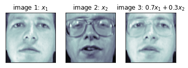

import numpy as np
import matplotlib.pylab as plt
x = np.array([10, 11, 12, 13, 14])
y = np.array([0, 1, 2, 3, 4])
x + y
array([10, 12, 14, 16, 18])
x - y
array([10, 10, 10, 10, 10])
np.array([[5, 6], [7, 8]]) + np.array([[10, 20], [30, 40]]) - \
np.array([[1, 2], [3, 4]])
array([[14, 24],
[34, 44]])
x = np.array([[1], [2], [3]])
y = np.array([[4], [5], [6]])
x.T @ y # 또는 np.dot(x.T, y)
array([[32]])
x = np.array([1, 2, 3])
y = np.array([4, 5, 6])
x @ y # 또는 np.dot(x, y)
32
x = np.arange(10)
N = len(x)
np.ones(N) @ x / N
4.5
x.mean()
4.5
from sklearn.datasets import load_digits
import matplotlib.gridspec as gridspec
digits = load_digits()
d1 = digits.images[0]
d2 = digits.images[10]
d3 = digits.images[1]
d4 = digits.images[11]
v1 = d1.reshape(64, 1)
v2 = d2.reshape(64, 1)
v3 = d3.reshape(64, 1)
v4 = d4.reshape(64, 1)
plt.figure(figsize=(9, 9))
gs = gridspec.GridSpec(1, 8, height_ratios=[1],
width_ratios=[9, 1, 9, 1, 9, 1, 9, 1])
for i in range(4):
plt.subplot(gs[2 * i])
plt.imshow(eval("d" + str(i + 1)), aspect=1,
interpolation='nearest', cmap=plt.cm.bone_r)
plt.grid(False)
plt.xticks([])
plt.yticks([])
plt.title("image {}".format(i + 1))
plt.subplot(gs[2 * i + 1])
plt.imshow(eval("v" + str(i + 1)), aspect=0.25,
interpolation='nearest', cmap=plt.cm.bone_r)
plt.grid(False)
plt.xticks([])
plt.yticks([])
plt.title("vector {}".format(i + 1))
plt.tight_layout()
plt.show()

(v1.T @ v2)[0][0], (v3.T @ v4)[0][0]
(3064.0, 3661.0)
(v1.T @ v3)[0][0], (v1.T @ v4)[0][0], (v2.T @ v3)[0][0], (v2.T @ v4)[0][0]
(1866.0, 1883.0, 2421.0, 2479.0)
A = np.array([[1, 2, 3], [4, 5, 6]])
B = np.array([[1, 2], [3, 4], [5, 6]])
C = A @ B
C
array([[22, 28],
[49, 64]])
A = np.array([[1, 2], [3, 4]])
B = np.array([[5, 6], [7, 8]])
C = np.array([[9, 8], [7, 6]])
A @ B
array([[19, 22],
[43, 50]])
B @ A
array([[23, 34],
[31, 46]])
A @ (B + C)
array([[42, 42],
[98, 98]])
A @ B + A @ C
array([[42, 42],
[98, 98]])
(A + B) @ C
array([[110, 96],
[174, 152]])
A @ C + B @ C
array([[110, 96],
[174, 152]])
(A + B).T
array([[ 6, 10],
[ 8, 12]])
A.T + B.T
array([[ 6, 10],
[ 8, 12]])
(A @ B).T
array([[19, 43],
[22, 50]])
B.T @ A.T
array([[19, 43],
[22, 50]])
A = np.array([[1, 2], [3, 4]])
I = np.eye(2)
A @ I
array([[1., 2.],
[3., 4.]])
I @ A
array([[1., 2.],
[3., 4.]])
from sklearn.datasets import fetch_olivetti_faces
faces = fetch_olivetti_faces()
f, ax = plt.subplots(1, 3)
ax[0].imshow(faces.images[6], cmap=plt.cm.bone)
ax[0].grid(False)
ax[0].set_xticks([])
ax[0].set_yticks([])
ax[0].set_title("image 1: $x_1$")
ax[1].imshow(faces.images[10], cmap=plt.cm.bone)
ax[1].grid(False)
ax[1].set_xticks([])
ax[1].set_yticks([])
ax[1].set_title("image 2: $x_2$")
new_face = 0.7 * faces.images[6] + 0.3 * faces.images[10]
ax[2].imshow(new_face, cmap=plt.cm.bone)
ax[2].grid(False)
ax[2].set_xticks([])
ax[2].set_yticks([])
ax[2].set_title("image 3: $0.7x_1 + 0.3x_2$")
plt.show()

x = np.array([1, 2, 3])
x
array([1, 2, 3])
A = np.arange(1, 10).reshape(3, 3)
A
array([[1, 2, 3],
[4, 5, 6],
[7, 8, 9]])
x.T @ A @ x
228